Warm. Quiet. Instant. — I will quietly hold what matters, and I will not get in your way.
The company book — brand, world, product, and laws in one place. Working edition · 2026-06-11 · Stage 1.5 (kit soft-approved, freeze pending) · UI rounds 1–5
pre-freeze · everything herein gated by Seth
01 · Product
What rotli is
A modular, hotkey-driven, local-first Mac menu-bar app — five modules in one warm shell, bundled
LLM/STT/TTS, nothing to install but rotli. The user is the quokka; the app is the island, designed so nothing has to be
learned. Summon with ⌥Space, click-away closes. The wider vision: notes as plain markdown files in one structure
that every view, every storage backend, and every AI (breve first) simply reads — Obsidian's economics, OpenClaw's capability,
Apple Notes' approachability. Free local forever; paid is convenience (sync, managed AI), never the product.
Notes
“Apple Notes, in markdown.” Folders · list · editor, tabs-in-panes, quick capture. The anchor — it writes the brain.
v1 — now
Chat
Many conversations over your own local models (/model to switch). Tag a chat to a note — done talking, summary already written. ⌘J asks inline from Notes.
next
Voice
Dictate (Parakeet STT, Wispr-Flow-grade cleanup, system-wide), listen to any note (local TTS, breve's engines), and voice mode — Chat worn as a voice interface.
next
Memory
Ask everything you know; cited answers, fully offline. The corpus is the brain — the Memory recalls it. Grounds Chat the day it lands.
then
Inbox
A calm client over your own email — Proton first (via Bridge), Gmail second, any IMAP. No rotli server.
later
Board
Drag-arrange thinking surface; the day-planner. Not a kanban.
later
One brain underneath, six fronts: the corpus (plain .md + index) is the brain — Notes writes it, Chat talks with it, Voice speaks it, the Memory recalls it, Inbox and Board feed it. Order: Notes → Chat → Voice → Memory → Inbox → Board.
menu bar, not dock⌥Space from anywhereclick-away closeslocal-first — plain .md + SQLite indexnothing to install but rotlievery hotkey rebindableevery icon labelednotifications never louder than needed
02 · Identity
The marks
Lowercase rotli — outlined Baloo 2 (true 600) with the traced curled-tail r as the signature
glyph and the standalone compact mark. Approved gate round 3 (2026-06-08 → 06-10 board intake). Full kit: board.html.
wordmark · cocoa on linen
reversed · on cocoa
r-mark
r-mark · mono
Tiles & avatars
linen tile
favicon @32
app icon
avatar
03 · Color
Five colors, tiered
Brand core = Cocoa (ink) + Clay (the one accent — punctuation, never a field). Supporting = Peach (tint) · Linen (ground) ·
Olive (success/sync). One clay element per pane; no pure white grounds; no clinical grey, ever.
Dark — warm, never clinicalground 241D18 · surface 2E2620 · text F1E7DA · muted B7A593 · border 3D3229 · clay clears AA
04 · Type
Satoshi & General Sans
Quietly holds what matters.
Satoshi — display, headings, the voice of the brand.
General Sans carries the UI and every note body — clean, friendly, legible at small sizes. The wordmark itself ships as
outlined paths (Baloo 2-600 provenance), so no surface ever waits on a font.
Heading
32 / 40
Satoshi Bold
Subheading
20 / 28
Satoshi Medium
Body
14 / 22
General Sans Regular
UI label
12 / 16
Medium
Both faces: Fontshare (ITF) — free commercial, self-hosted, recorded in LICENSES.md. A deliberate deviation from
smLab's Fontsource default, Seth-approved.
05 · Icons
The kit set — v2, frozen 1.0.0
Re-cut to module truth and frozen 2026-06-11. Outline family, 24-grid, 1.8 stroke, currentColor, ≤1 clay accent (sync excepted). On dark grounds olive lifts to --rotli-olive-bright. Every icon labeled (the quokka rule).
Notes
Chat
Voice
Memory
Inbox
Board
Capture
Tags
Search
Sync
Settings
Frozen 2026-06-11 (run 2026-06-11-icons-recut, Seth-approved). Retired from draft v1: Calendar, Sheets, Transcript, Quick Notes, Reminder, Action Items.
06 · World
The quokka & the island
Stage-1.5 illustrated register (soft-approved — “overall good, we'll play around more”). Placement law: the world appears at
low-frequency moments only — onboarding, empty states, about, the model-download wait. Never in the editor, never in
notifications, never in the tray.
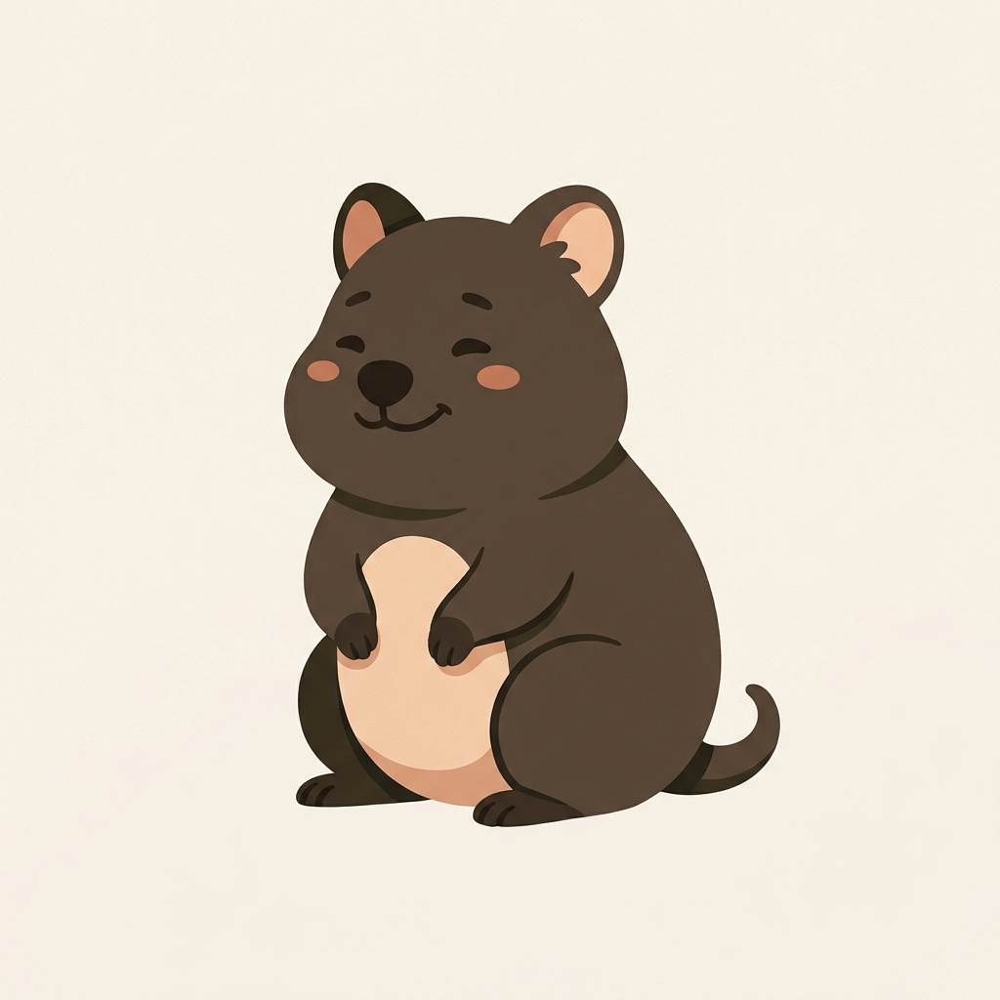
quokka — master
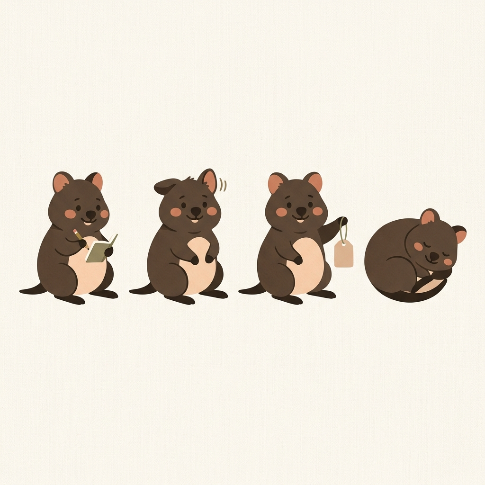
pose sheet
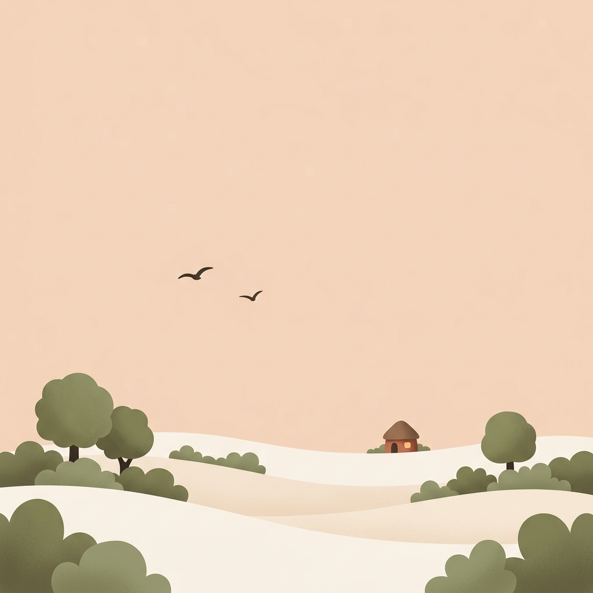
island — wide (onboarding / about)
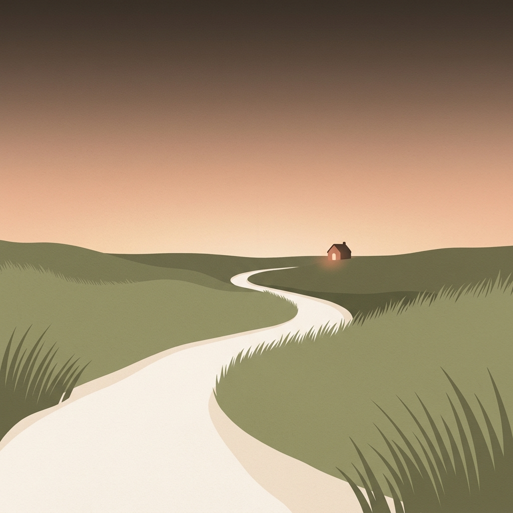
island path (onboarding)
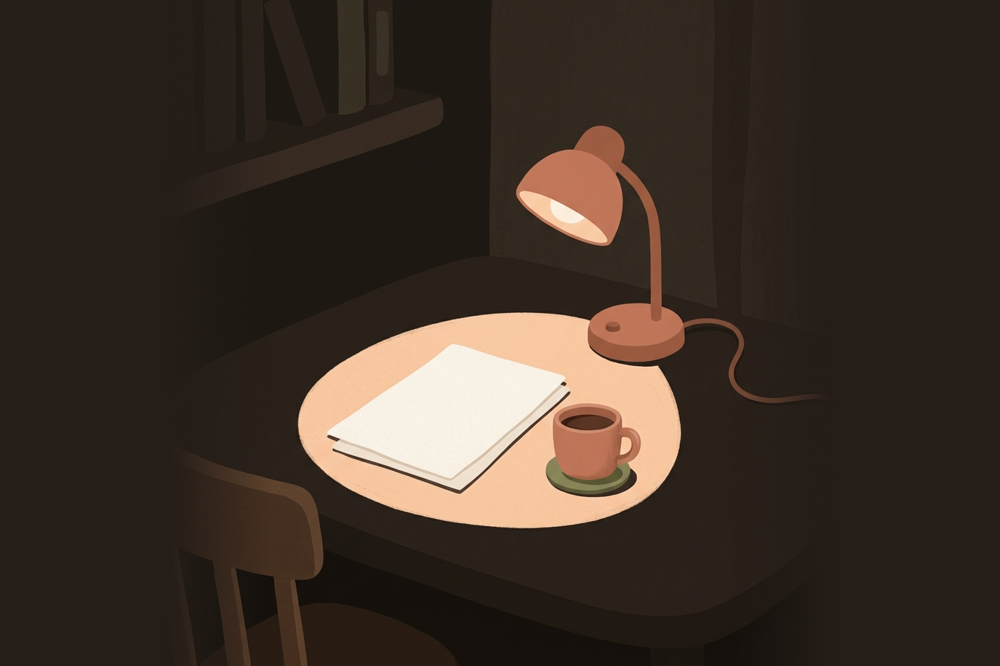
lamp nook (dark / night)
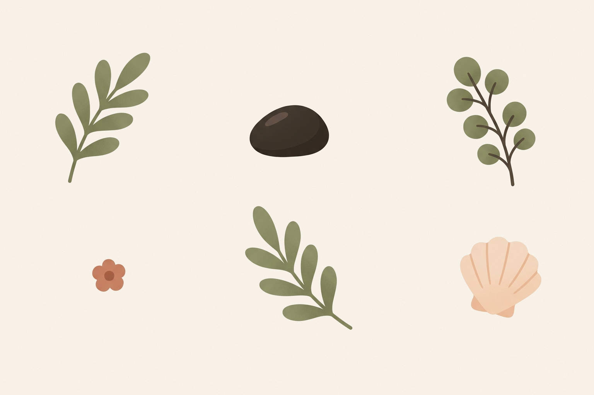
botanical spots (empty states)
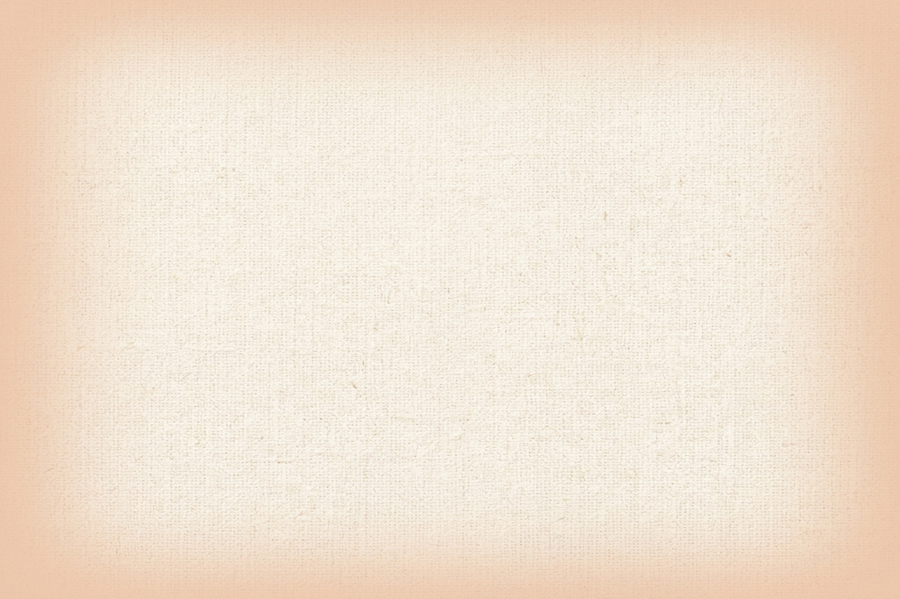
paper grain (texture)
07 · Patterns
Constructed, below conscious perception
curl flourish — the r's tail as motif
dot grid — lamplit tooth
08 · The App — Notes v1, current state (round 5)
The window today
Five gated rounds, multi-agent reviewed, competitor-researched (Apple Notes, Bear, Craft, Obsidian, GoodNotes, Raycast, Linear).
Every shot below links to its live gate.
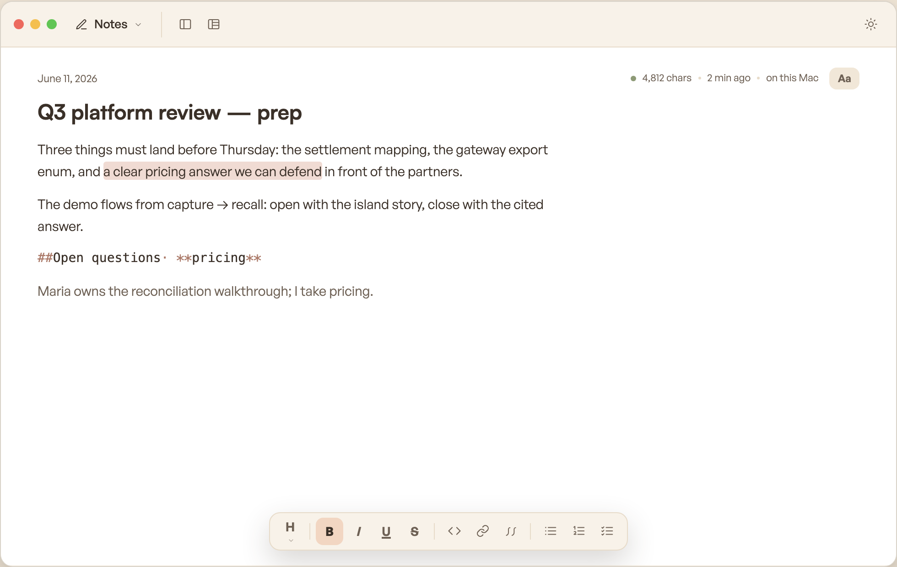
The editorRaycast-style floating format bar · header status (chars · updated · where) · visible rail toggles · markdown-native active line · clickable module identityopen gate r5 →
Storage~/rotli plain files · This Mac default · adapters laterr2 →
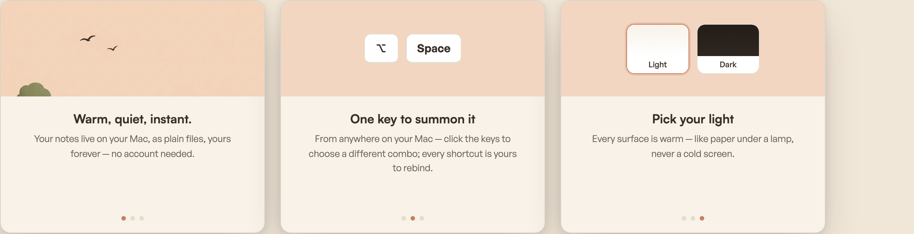
Onboardingthree cards, under a minute, no accountr2 →
09 · Modules ahead
One chassis, five inhabitants
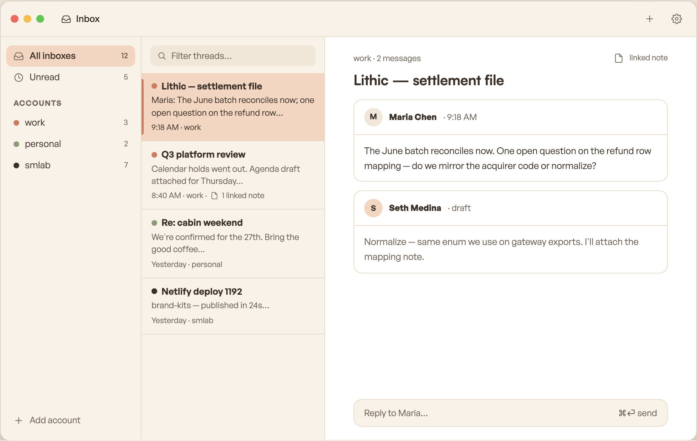
The chassis proofInbox in the identical shell (Wiki / Voice / Board minis live in the r3 gate). Mail: Proton first (via Bridge, on-device decryption) · Gmail second · any IMAP. No rotli server, ever.r3 →
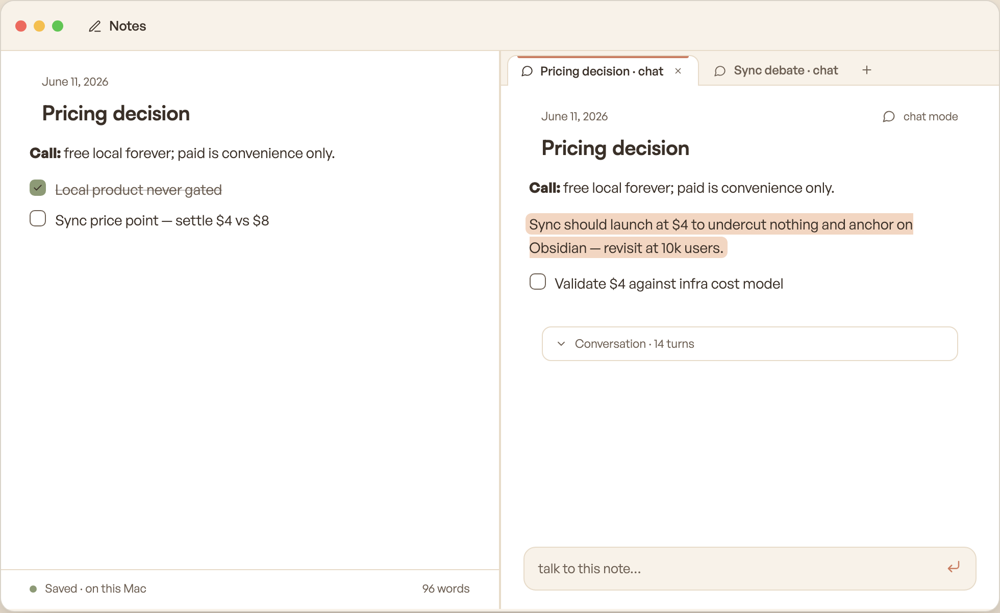
Concept — chat on a notethe note IS the living summary; transcript is scaffolding (sidecar .jsonl); breve = the local-AI first layer with Resend + Signal delivery. Structure locked in r2; ships with the breve round.r2 →
10 · Laws
The grammar everything obeys
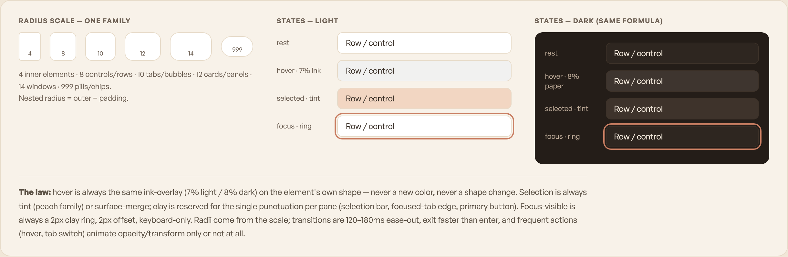
Shape & state boardradii 4/8/10/12/14/999 · hover = 7% ink (8% paper dark) · selected = tint · focus = 2px clay ring · ≤200ms, exit faster than enterr3 →
Markdown law
v1 is markdown-native: marks are visible syntax (**…**, ==…==, <u>); typography (size · measure) is a styling layer saved to .rotli/, never written into the file. Doc-style arrives later as a view mode over the same .md.
The corpus
One canonical structure: plain .md files in ~/rotli/ (folders on disk = folders in the sidebar, 4-line frontmatter incl. id:) + a rebuildable .rotli/ index. Every module writes into it; every AI reads from it. Local is the truth; sync and clouds are adapters.
Quiet AI
Sentence/paragraph reveals, opacity only; one static status line, never a spinner; zero AI indicators in the note list; the freshest AI edit sits on a peach tint that fades to ground.
Speech stack — open source, no OpenAI lineage
STT: Parakeet TDT (NVIDIA, CC-BY-4.0) bundled default — locked 2026-06-11, verified trivial on the dev machine (M4 Max / 64 GB) · Moonshine as the lite fallback for low-spec Macs · Qwen3-ASR (52 languages) as the multilingual option. TTS: the same open engines breve uses. Everything behind swappable SttService/TtsService interfaces — engines are config, not marriage. Cleanup pass (filler stripped, sentences repaired) runs on the bundled LLM; verbatim is a setting.
Keymap
⌥Space summon · ⌘K palette · ⌘N new note · tabs ⌘T/⌘W/⌃Tab/⌘1–8 · panes ⌘D/⌘⇧D/⌘⌥←→ · rails ⌘0/⌥⌘L · focus ⌥⌘F · modules ⌃1–5. Everything rebindable; everything also in ⌘K.
Light-mode bug found (system dark override) → gates pinned light. Floating status pill · visible rail toggles · markdown law restated · Inbox story (liked, Proton required).
r5
Selection bubble rejected → Raycast-style bottom format bar in kit clothes. Status → header-inline. Identity = module switcher (clickable, day one). Proton-first provider order. Pending Seth's r5 verdicts.
r6
Wiki renamed “the Memory” (Seth's call — the corpus is the brain; Notes/Chat/Memory are its fronts). New Chat module designed: Inbox-style chassis, /model switching over configured local models, chat-tagged-to-note loop (consent-only edits, summary already written), ⌘J ask-while-writing. Proposed order Notes → Chat → Memory → Inbox → Voice → Board. Pending r6 verdicts.
r7
Voice promoted (Seth: it's just STT + TTS — breve's engines + whisper). Designed: system-wide dictation with cleanup-by-default (verbatim a setting), listen-to-a-note (player takes the format bar's slot), voice mode = Chat in a voice skin (orb, “see as chat”, “tag a note”). Order v2: Notes → Chat → Voice → Memory → Inbox → Board. STT engine locked: Parakeet TDT (no OpenAI lineage; M4 Max verified) with Moonshine lite + Qwen3-ASR multilingual behind SttService. Open: pull dictation into Notes v1. Pending r7 verdicts.
lock-in
Seth approved everything, 2026-06-11 — r5/r6/r7 verdicts ✓ (incl. dictation in v1) · stack confirmed per the theology canon (Tauri v2 + React + Vite + TS + Bun; plain CSS on tokens; CRDT deferred to sync) · STACK v2 + ROADMAP v2 + DECISIONS lock-in written. Remaining before code: icon re-cut → kit freeze → fresh repo.
12 · Status
Where we stand — LOCKED 2026-06-11
All seven gate rounds approved.Stack confirmed against the theology
(~/memex-vault/theology/personal-canon.md): Tauri v2 + React + Vite + TS strict + Bun · plain CSS on kit tokens · corpus =
plain .md + rebuildable .rotli/ · bundled local AI (Gemma-class LLM, Parakeet STT, breve's TTS — no OpenAI
lineage). v1 = Notes + dictation, then the Chat/Voice wave, then the Memory. STACK.md v2, ROADMAP.md v2, and the
DECISIONS lock-in block are the written canon; the seven gates are the visual spec.